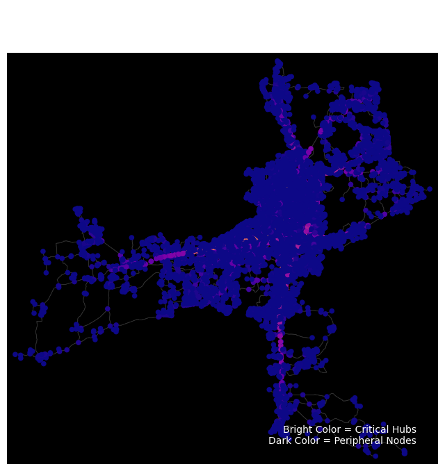

Show Code
import osmnx as ox
import networkx as nx
import matplotlib.pyplot as plt
import geopandas as gpd
# ==========================================
# 1. 准备数据 & 构建拓扑
# ==========================================
print("🚀 正在构建路网拓扑 (Baseline)...")
# 下载合艾路网 (Drive Network)
# 这一步建立图结构 (Nodes & Edges)
place_name = "Hat Yai, Songkhla, Thailand"
G = ox.graph_from_place(place_name, network_type='drive')
# 投影到 UTM (米单位)，这对于计算中心性和距离非常重要！
G_proj = ox.project_graph(G)
# ==========================================
# 2. 计算介数中心性 (Betweenness Centrality)
# ==========================================
print("⏳ 正在计算中心性指标 (可能需要 1-2 分钟，请耐心等待)...")
# 计算由图构成的 DiGraph 的中心性
# weight='length' 表示我们假设人们倾向于走最短的路
bc = nx.betweenness_centrality(ox.get_digraph(G_proj), weight='length')
# 把计算结果写入节点属性
nx.set_node_attributes(G_proj, bc, 'bc')
# ==========================================
# 3. 可视化：热力图
# ==========================================
print("🎨 正在绘制网络结构热力图...")
# 根据中心性数值给节点上色 (Plasma 色系：紫色低 -> 黄色高)
nc = ox.plot.get_node_colors_by_attr(G_proj, 'bc', cmap='plasma')
fig, ax = ox.plot_graph(
G_proj,
node_color=nc,
node_size=30, # 节点大小
node_zorder=2, # 节点在路网之上
edge_color='#333333', # 深灰背景路网
edge_linewidth=0.5,
bgcolor='black', # 黑色底图显专业
show=False,
close=False
)
ax.set_title("Baseline Network Topology: Critical Nodes\n(Metric: Betweenness Centrality)",
color='white', fontsize=15, pad=20)
# 加个简单的解释
ax.text(0.95, 0.05, "Bright Color = Critical Hubs\nDark Color = Peripheral Nodes",
transform=ax.transAxes, ha='right', color='white', fontsize=10)
plt.show()🚀 正在构建路网拓扑 (Baseline)...
⏳ 正在计算中心性指标 (可能需要 1-2 分钟，请耐心等待)...
🎨 正在绘制网络结构热力图...